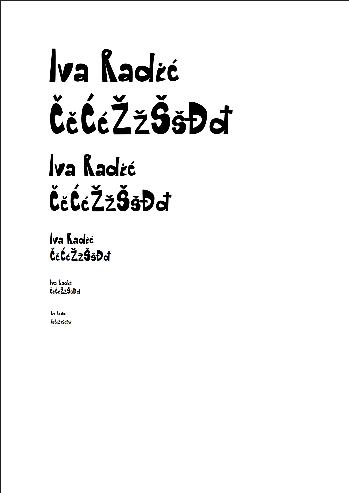
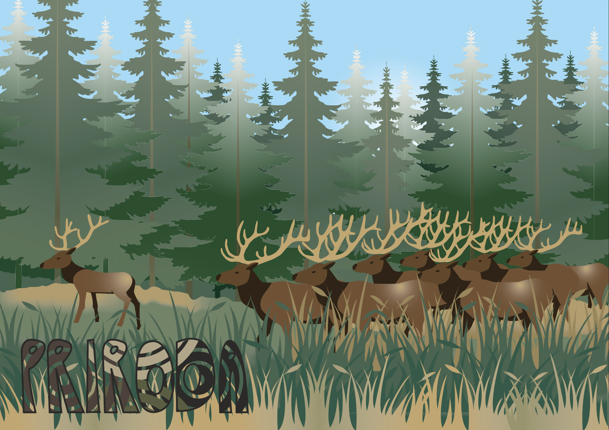
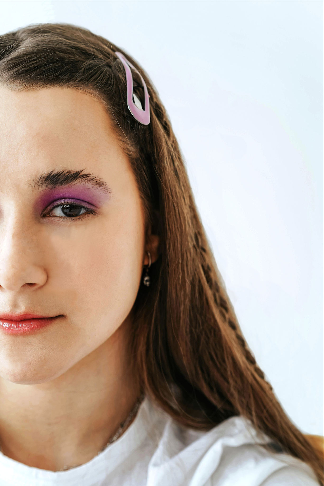
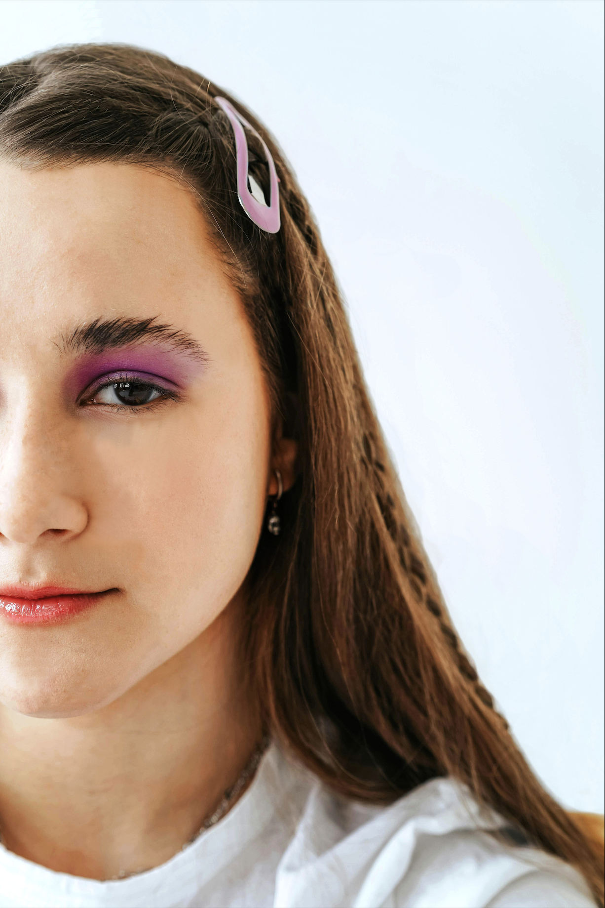

Vektorska grafika - Adobe Illustrator


Font - rad u programu FontForge

Bezierove krivulje - rad u programu Adobe Illustrator
> precizno crtanje, crtanje Bezierovih krivulja u koordinatnom sustavu


Boja i transformacije - rad u programu Adobe Illustrator
> kreiraje Color grupe (Swatch), korištenje rotacije, scale, transparencije, multipliciranje oblika, definiranje uzoraka…


Gradijenti i transparencija - rad u programu Adobe Illustrator
> izrada složenih objekata koji se sastoje od više staza metodama spajanja (Unite/Compound path) ili oduzimanja oblika (Difference/Subtract), apliciranje različitih vrsta gradijenata (linearni, radijalni, mesh...) i transparencije
Projektni zadatak za vektorsku grafiku - rad programu Adobe Illustrator
> korištenje svih naučenih tehnika pri izradama vježbi u Illustratoru
Piksel grafika - Adobe Photoshop
 
Retuširanje - rad u programu Adobe Photoshop
> tehnike digitalnog retuširanja fotografija, selekcije (Lasso Tool), zamućivanje (Dust&Scratches, Median), kloniranje (Clone Stamp, Heal), kopiranje selekcija u layere, lokalne i globalne korekcije boja (Burn/Dodge brush, Levels, Brightness/Contrast)


Koloriranje - rad u programu Adobe Photoshop
> tehnike neinvazivnog koloriranja slike koje se može primijeniti na crno-bijele slike ili slike u boji kojima želimo promijeniti nijansu određenih područja

Fotomontaža - rad u programu Adobe Photoshop
> kombiniranje više fotografija izrezivanjem dijelova različitih slika i spajanjem u jednu cjelinu, tehnike selektiranja jednostavnih i složenih oblika, izrada i uklapanje sjena objekata te korekcija boja za dojam realističnosti

Projektni zadatak - piksel grafika - rad u programu Adobe Illustrator
> korištenje svih naučenih tehnika pri izradama vježbi u Photoshopu